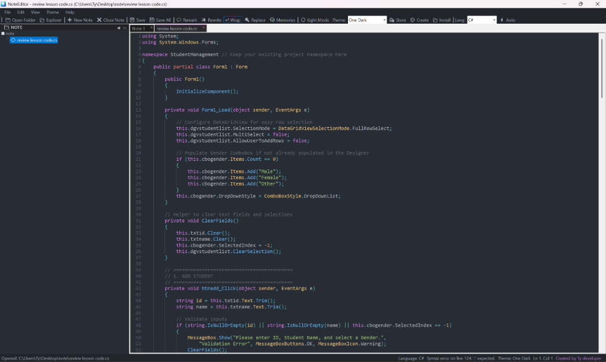

កម្មវិធីកត់ត្រា និងកែសម្រួល Markdown ដ៏លឿន និងស្អាត សម្រាប់ Windows
កន្លែងកត់ត្រា និងសរសេរកូដដែលគ្មានការរំខាន លឿនដូចផ្លេកបន្ទោរសម្រាប់ឯកសារ និងគម្រោងរបស់អ្នក។ ដំណើរការលើ Windows ដោយមិនប្រើប្រាស់ទំហំ RAM ច្រើន សុវត្ថិភាព គ្មានការតាមដានទិន្នន័យ និងមាន Dark Mode ដ៏ស្រស់ស្អាត។

អ្វីៗគ្រប់យ៉ាងដែលអ្នកត្រូវការដើម្បីកត់ត្រា និងសរសេរកូដ
NoteEditor បង្កើតឡើងដោយ Ty developer ដោយប្រើប្រាស់ C# .NET និង ScintillaNET ដើម្បីផ្តល់នូវបទពិសោធន៍កត់ត្រា និងសរសេរកូដដ៏រលូនបំផុត។
ម៉ាស៊ីន ScintillaNET លឿនដូចផ្លេកបន្ទោរ
ដំណើរការដោយ C# .NET 9 និង ScintillaNET សម្រាប់ Windows ផ្ទាល់។ បើកដំណើរការក្រោម 15ms សរសេរកូដរលូន គ្មានការកកស្ទះ និងស៊ី RAM ក្រោម 80 MB។
Code Memories & IntelliSense
ប្រព័ន្ធជំនួយសរសេរកូដឆ្លាតវៃ Auto-complete, Auto-closing tags </> និងបិទវង់ក្រចក (), [], {} ព្រមទាំងសម្រង់សម្តី "" ដោយស្វ័យប្រវត្តិ។
Theme Engine, Gallery & Creator
ភ្ជាប់មកជាមួយ One Dark Theme ស្រាប់ ព្រមទាំងមាន Theme Creator និង Theme Gallery អាចបង្កើត និងទម្លាក់ Theme (Drag & Drop) ចូលបានភ្លាមៗ។
ផ្ទាំងរុករកឯកសារ (File Explorer)
ភ្ជាប់មកជាមួយ Folder Tree ខាងឆ្វេង បង្ហាញរូបសញ្ញាប្រភេទឯកសារ (.cs, .py, .js, .html, .md) ងាយស្រួលបើក បង្កើត ឬលុបឯកសារគម្រោង (F2 / Del)។
HTML Live Preview & Auto-Detect
អាចបើកផ្ទាំងមើលការបង្ហាញលទ្ធផល HTML/Web ផ្ទាល់ភ្លាមៗ ព្រមទាំងមាន Auto-Detect Language សម្រាប់ភាសាកូដជាង ៥០ ភាសា។
សុវត្ថិភាព និងឯកជនភាព ១០០%
រាល់ឯកសារកត់ត្រា និងកូដរបស់អ្នកស្ថិតនៅលើកុំព្យូទ័ររបស់អ្នកផ្តាច់មុខ។ NoteEditor មិនដែលបញ្ជូនឯកសាររបស់អ្នកទៅម៉ាស៊ីនមេ ឬលួចតាមដានឡើយ។
សាកល្បងប្រើប្រាស់ NoteEditor លើកម្មវិធីរុករក
សាកល្បងវាយអត្ថបទក្នុងប្រអប់នេះដើម្បីដឹងពីភាពងាយស្រួល និងរលូនមុនពេលទាញយកមកដំឡើង។
ការវាយតម្លៃ ពិន្ទុ និងមតិយោបល់ពីអ្នកប្រើប្រាស់
មើលថាតើអ្នកអភិវឌ្ឍន៍ អ្នកសរសេរ និងសិស្សនិស្សិតនិយាយអ្វីខ្លះអំពី NoteEditor។ សូមចែករំលែកបទពិសោធន៍របស់អ្នកនៅទីនេះ!
ដាក់ពិន្ទុ និងសរសេរមតិយោបល់
ចែករំលែកមតិពិតរបស់អ្នក។ ការវាយតម្លៃរបស់អ្នកនឹងត្រូវបានផ្សព្វផ្សាយភ្លាមៗ។
ទាញយក NoteEditor v2.0 សម្រាប់ Windows
ទទួលបានកម្មវិធីកត់ត្រា និងកែសម្រួល Markdown ដ៏លឿន និងគ្មានការរំខានលើកុំព្យូទ័ររបស់អ្នកថ្ងៃនេះ។ ឥតគិតថ្លៃជារៀងរហូត មិនចាំបាច់ចុះឈ្មោះ គ្មានការតាមដានទិន្នន័យឡើយ។
ទាញយក
ចុចលើប៊ូតុងដើម្បីទាញយកឯកសារ NoteEditor_v2_Setup.exe។
ដំឡើងកម្មវិធី
បើកឯកសារដំឡើង ហើយធ្វើតាមការណែនាំយ៉ាងរហ័ស។
ចាប់ផ្តើមកត់ត្រា
បើក NoteEditor ពី Start menu ហើយរីករាយនឹងការសរសេរ!
ព័ត៌មានកញ្ចប់កម្មវិធី និងលក្ខណៈបច្ចេកទេស
| ឈ្មោះឯកសារ | NoteEditor_v2_Setup.exe |
|---|---|
| អ្នកអភិវឌ្ឍន៍ | Ty developer |
| បច្ចេកវិទ្យា | C# .NET 9 Windows Forms & ScintillaNET |
| កំណែ | v2.0.0 (កំណែផ្លូវការមានស្ថិរភាព) |
| ទំហំឯកសារ | 40.05 MB (41,990,446 bytes) |
| ប្រព័ន្ធប្រតិបត្តិការ | Windows 11, Windows 10 (64-bit) |
| អង្គចងចាំ (RAM) | 256 MB អប្បបរមា (ប្រើជាក់ស្តែងក្រោម 80 MB) |
| អាជ្ញាប័ណ្ណ | ឥតគិតថ្លៃ ១០០% សម្រាប់ការប្រើផ្ទាល់ខ្លួន និងអាជីវកម្ម |
| ពិនិត្យសុវត្ថិភាព | ✓ បានផ្ទៀងផ្ទាត់ គ្មានមេរោគ & មានសុវត្ថិភាពខ្ពស់ |
សំណួរដែលសួរញឹកញាប់
ចម្លើយរហ័សអំពីលក្ខណៈពិសេស សុវត្ថិភាព និងភាពស៊ីគ្នាជាមួយកុំព្យូទ័ររបស់អ្នក។
តើ NoteEditor ពិតជាឥតគិតថ្លៃ ១០០% មែនទេ?
បាទ/ចាស ពិតប្រាកដណាស់។ NoteEditor គឺឥតគិតថ្លៃ ១០០% គ្មានរយៈពេលកំណត់សាកល្បង គ្មានការជាវលាក់កំបាំង និងគ្មានផ្ទាំងពាណិជ្ជកម្មឡើយ។ អ្នកអាចប្រើប្រាស់វាដោយសេរីទាំងការងារផ្ទាល់ខ្លួន និងការងារអាជីវកម្ម។
តើឯកសារកត់ត្រា និង Markdown របស់ខ្ញុំត្រូវបានរក្សាទុកនៅឯណា?
រាល់ឯកសារទាំងអស់ត្រូវបានរក្សាទុកនៅលើកុំព្យូទ័ររបស់អ្នកផ្ទាល់ជាទម្រង់ Markdown (.md) ឬ Text (.txt) ស្តង់ដារ។ គ្មានការបង្ខំឱ្យផ្ទុកលើ Cloud ឡើយ។ អ្នកជាម្ចាស់ និងមានសិទ្ធិផ្តាច់មុខ ១០០% លើឯកសារផ្ទាល់ខ្លួនរបស់អ្នក។
តើ NoteEditor ត្រូវការ Windows កំណែណាខ្លះដើម្បីដំណើរការ?
NoteEditor ត្រូវបានបង្កើតឡើងសម្រាប់ Windows 11 និង Windows 10 (64-bit)។ វាក៏ដំណើរការយ៉ាងរលូនលើឧបករណ៍ Windows on ARM ផងដែរ។
តើ NoteEditor គាំទ្ររូបមន្តគណិតវិទ្យា កូដ និងបញ្ជីកិច្ចការដែរឬទេ?
បាទ! កម្មវិធីគាំទ្រពេញលេញនូវ GitHub Flavored Markdown (GFM), រូបមន្តគណិតវិទ្យា LaTeX, ការបង្ហាញពណ៌កូដសម្រាប់ភាសាកូដជាង ៥០ និងបញ្ជីធីកកិច្ចការងាយស្រួល។
តើខ្ញុំអាចផ្ញើមតិកែលម្អ ឬរាយការណ៍បញ្ហាដោយរបៀបណា?
អ្នកអាចដាក់ពិន្ទុ និងសរសេរមតិយោបល់នៅក្នុងផ្នែក ការវាយតម្លៃ & មតិយោបល់ ខាងលើ។ យើងតាមដាន និងអានរាល់មតិយោបល់របស់សហគមន៍ជានិច្ចដើម្បីកែលម្អជំនាន់បន្តបន្ទាប់!